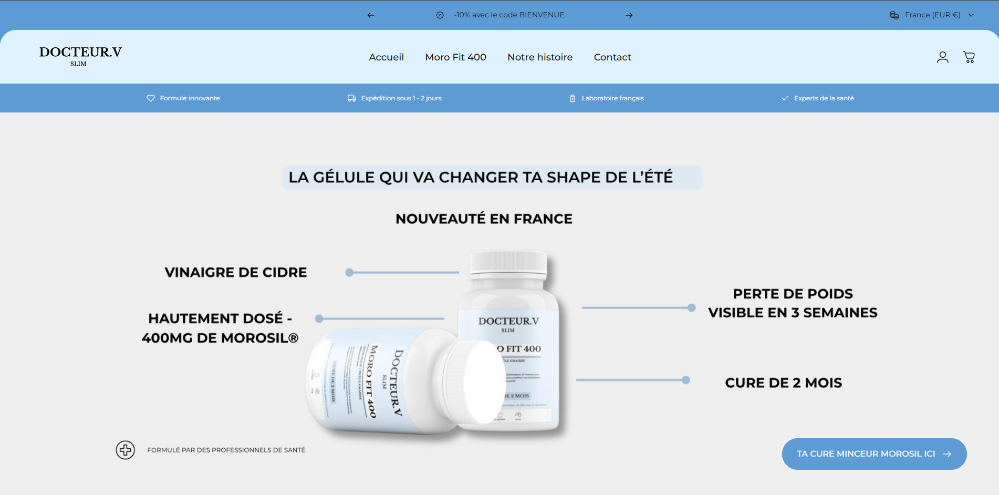
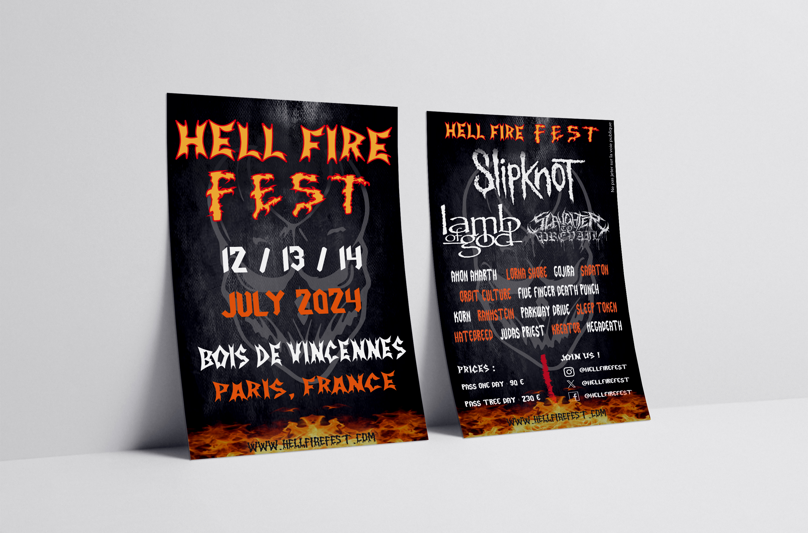

Projets
-

TimeFlow
Une application de pointage et de planning pour PME : présences en temps réel, emplois du temps, heures supplémentaires et demandes de modification.
-

Site pour photographe
Un site vitrine sans framework, mis en ligne de bout en bout : SEO, images optimisées, domaine personnalisé et HTTPS sur GitHub Pages, RGPD.
-

Docteur V
Un site e-commerce créé de zéro sur Shopify pour un produit unique, le Morofit 400, et mis en conformité avec Google Ads.
-

ChatBot
Un chatbot qui répond au texte et analyse les images grâce à l'API Gemini 1.5 Flash, avec des requêtes asynchrones fluides.
-

Spotify
Spotify recréé en trois jours, avec un Mix Intelligent et des Défis Musicaux pour découvrir de nouveaux morceaux.
-

SFR
La page d'accueil de SFR reconstruite dans un thème WordPress sur mesure, pour tester si le CMS convenait à leur refonte.
-

HellFire Fest
La campagne complète d'un festival de métal imaginaire : logo, affiche, flyers et canette de boisson énergisante.
-

Pong
Une réplique du Pong à deux joueurs : raquettes au clavier, collisions et animation dessinées dans un canvas HTML5.